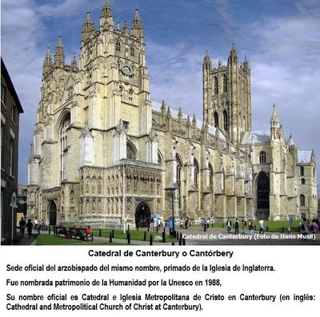

Hoy se cumplen 491 años de la promulgación de la primera Acta de Supremacía (Act of Supremacy), aprobada por el Parlamento de Inglaterra el 3 de noviembre de 1534, bajo el reinado de Enrique VIII, la cual provocó el rompimiento del vínculo entre la Iglesia de Inglaterra y la Iglesia Católica Romana. Pero ese decreto no fue un gesto teológico ni una reforma espiritual inspirada por elevados ideales religiosos. Fue, sin rodeos, un golpe político contra Roma, y una maniobra personal del monarca inglés, quien buscaba a toda costa anular su matrimonio para satisfacer sus ambiciones dinásticas y sus caprichos sexuales. Con esta ley, el rey se proclamó la «suprema y única cabeza en la Tierra de la Iglesia en Inglaterra», poniendo fin a la autoridad del papa en su territorio, y abriendo el camino para la creación de la Iglesia Anglicana.


La Iglesia Anglicana no nació, pues, del Evangelio ni de una supuesta «revelación divina», sino de una disputa entre coronas europeas, los pretextos de un rey obsesionado con un heredero varón que «no le daba su esposa», la española Catalina de Aragón, y la negativa del papa Clemente VII a conceder aquella anulación de matrimonio que rompía alianzas políticas con España. Enrique VIII se había enamorado de Ana Bolena, quien era inglesa, pero el papa se negaba a anular su matrimonio, en parte debido a la influencia del sobrino de Catalina, el emperador Carlos V. Así que Enrique decidió romper con Roma, separándose de la Iglesia Católica, y asumiendo él mismo la supremacía de la Iglesia de Inglaterra. Por tanto, esta iglesia fue desde su origen un instrumento de poder, subordinada al trono y moldeada según conveniencias monárquicas.
Un par de años después, Ana Bolena sería acusada falsamente por Enrique VIII de tener relaciones adúlteras con cinco hombres, y hasta de brujería, siendo decapitada en la Torre de Londres el 19 de mayo de 1536. Así, Enrique quedó libre para casarse nuevamente, esta vez con Juana Seymour. Y por supuesto, con esta moralidad, siguió encabezando la Iglesia de Inglaterra.
Pero volviendo al Acta de Supremacía de 1534 que creó la nueva iglesia, sólo se trató de una alianza obscena entre religión y poder. Convertía oficialmente a la corona inglesa en máxima autoridad religiosa. Un rey —con amantes, intrigas cortesanas, ejecuciones y tres divorcios— se autoproclamó la cabeza designada por «Dios». Y el acta no dejaba margen de duda: la Iglesia en Inglaterra sería propiedad legal del monarca, con todos sus «honores, dignidades, jurisdicciones, beneficios y bienes». Así que no es difícil entender por qué todos los obispos desde entonces, han sido elegidos para servir primero a la política y luego a la fe.
La obediencia religiosa se garantizó desde el inicio en esta iglesia mediante el control político: ningún sacerdote puede ejercer en Inglaterra si no presta juramento de lealtad al monarca. El arzobispo de Canterbury —la máxima figura eclesiástica del anglicanismo— es designado directamente por el rey o la reina. En otras palabras, la Iglesia Anglicana es, desde su fundación, una iglesia nacional al servicio del Estado; una pieza más de la maquinaria monárquica.
Actualmente muchos creyentes consideran que el anglicanismo es una alternativa «moderada» entre Roma y el protestantismo. Pero se equivocan. Desde el adulterio de Enrique VIII al encubrimiento de abus0s en el siglo XXI, esta institución arrastra desde su origen corrupción moral, ambición política, y grandes dosis de hipocresía religiosa. Y la historia lo confirma hasta hoy:
El pasado 3 de octubre de 2025, casi cinco siglos después de su fundación, la Iglesia Anglicana volvió a ser noticia mundial: el rey Carlos III nombró a Sarah Mullally de 63 años, como nueva arzobispa de Canterbury, convirtiéndose en la primera mujer en ocupar el cargo en toda la historia. Pero el anuncio no celebraba la «igualdad de género», como algunos medios ingenuamente titularon, sino que intentó distraer a la opinión pública del escándalo de encubrimiento de abus0s sexuales que actualmente sacude a la Iglesia de Inglaterra.
Como recordaremos, el puesto quedó vacante durante casi nueve meses tras la renuncia de Justin Welby, de 69 años, acusado de encubrir los abus0s físicos, psicológicos y sexuales cometidos por el abogado cristiano John Jackson Smyth (1941–2018) en campamentos «religiosos» realizados en Inglaterra y África durante las décadas de 1970 y 1980. Las víctimas fueron jóvenes varones sometidos a t0rturas «disciplinarias», con el beneplácito de líderes eclesiásticos. Y muchos denunciaron también presiones y amenazas de silencio dentro de la Iglesia.
La renuncia de Welby fue presentada como «voluntaria» y «por motivos personales», pero los hechos son explícitos: se fue rodeado de acusaciones de encubrimiento e inmoralidad institucional. Y en ese contexto, Sarah Mullally —de soltera Sarah Elisabeth Bowser, una ex enfermera y obispa de Londres, quien es bien vista por los sectores liberales— llega como un intento desesperado de lavar la imagen de una institución manchada por abus0s, pactos de silencio y complicidad con el crimen.
Sin embargo, toda la insolvencia moral de la Iglesia Anglicana no ha impedido que se haya expandido a otros países, sobre todo antiguas colonias inglesas, como Canadá, Estados Unidos, parte de las Antillas, Australia, Nueva Zelanda, Sudáfrica, y algunos países del Sureste de Asia y de África. En América es reconocida actualmente bajo la denominación de Iglesia Episcopal, teniendo diócesis en los Estados Unidos, Islas Vírgenes Estadounidenses, Haití, Taiwán, Colombia, República Dominicana, Ecuador, Honduras, Nicaragua, Puerto Rico y Venezuela. Con ese nombre de «Iglesia Episcopal» intenta aparentar independencia, pero forma parte del mismo aparato de poder religioso surgido del adulterio real, la corrupción política y la violencia clerical del siglo XVI.
Actualmente con 98 millones de fieles en 160 países, la Comunión Anglicana se presenta como «moderada, plural y moderna». Pero su estructura interna sigue siendo jerárquica, autoritaria y monárquica. Su liturgia no es más que una copia cosmética del catolicismo romano: sotanas, incienso, templos góticos, jerarquías clericales, procesiones y ostentación. Sólo incorporó ciertos «cambios» cuando la presión social lo hizo inevitable: primero toleró los divorcios, luego el matrimonio en miembros del clero, después las mujeres sacerdotisas, y finalmente los obispos LGBT. Un «progreso» no por convicción, sino por supervivencia institucional.
Y aunque los defensores del anglicanismo suelen decir que su separación de Roma fue un paso hacia la libertad religiosa, la evidencia histórica dice lo contrario: nunca hubo tanta persecución religiosa en Inglaterra como después del Acta de Supremacía. Monjes disidentes fueron ejecutados, propiedades monásticas confiscadas, y quienes criticaran al rey podían ser acusados de traición y terminar en la horca. ¿Libertad religiosa?, sí… pero sólo para adorar al monarca.
Así que el aniversario de hoy no recuerda una reforma religiosa inspirada en la búsqueda de la verdad, sino el triunfo del poder político sobre la credulidad religiosa. La Iglesia Anglicana es la prueba histórica de que las religiones, antiguas o modernas, pueden transformarse en herramientas de legitimación para gobiernos y monarquías. Se disfrazan de moral, hablan de amor al prójimo, pero actúan con ambición, violencia institucional y encubrimiento criminal.
Casi cinco siglos después, esta iglesia sigue siendo un brazo de la élite británica, controlada por la corona, y débil ante los abus0s de sus propios clérigos. Lo que nació del adulterio y la ambición, se sostiene hoy con relaciones públicas y maquillaje mediático. Cambian los obispos, cambian las sotanas… pero el poder sigue intacto.
[Godless Freeman]
Comentarios
Comments powered by Disqus